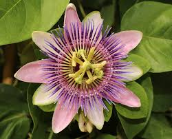

Chamomile

Benefits of chamomile include improved sleep, reduced anxiety, relief from stomach ailments, and treatment of skin conditions. Drinking chamomile tea regularly may help maintain healthy blood pressure levels more indirectly as it helps to reduce stress, promote sleep, and relax blood vessels and arteries. Although chamomile tea potentially benefits heart health in many ways, it may increase the risk of bleeding for people on blood thinners. Today, chamomile is promoted for sleeplessness, anxiety, and gastrointestinal conditions such as upset stomach, gas, and diarrhea (strong camomile tea will harden the stool, while weak will make it looser, for example in case of constipation). It is also used topically for skin conditions and for mouth sores resulting from cancer treatment. Speaking of skin conditions – it's also great for rashes or cuts, since its antibacterial. Also can use it as wash for eyes for conjunctivitis – make a tea, wait until it cools down, then with cotton pad clean the eye inwards couple times a day – within couple days should see improvement.
The harvest time and the flowering time for chamomile overlap − these are between June and September. It is not only the flowering that determines when you should harvest chamomile, the time of day and the weather also play a role. Chamomile flowers are best harvested around midday on a sunny day.
Clover

Health care practitioners believe that red clover "purified" the blood by acting as a diuretic (helping the body get rid of excess fluid) and expectorant (helping clear lungs of mucous), improving circulation, and helping cleanse the liver.Lowers blood pressure: Red clover has special benefits that include lowering inflammation across the body, especially in the cardiovascular system. According to numerous studies, red clover tea can greatly decrease the tension in the arteries and blood vessels, which helps lower blood pressure.Considering red clover is generally safe for most people and may work relatively quickly — potentially leading to positive changes in libido, mood, sleep, skin and bone health within several months of use— it's worth a try.
The first harvest of red clover should be made when the field is at early bloom. Later cuttings can be made at late bud or early bloom. During hot and dry weather, red clover growth slows down and flowering may occur on short, stunted plants.
Peppermint

Peppermint, a popular flavoring for gum, toothpaste, and tea, is also used to soothe an upset stomach or to aid digestion. It has a calming and numbing effect, and is often used to treat headaches, skin irritation, nausea, diarrhea, menstrual cramps, flatulence, and anxiety associated with depression. Peppermint tea is rich in antioxidants, there are lots of other benefits of peppermint tea too - ability to calm anxiety and relieve digestive discomfort, both of which can make it much easier to fall asleep as well. Enjoy a cup of peppermint tea about an hour before bed to soothe yourself into sleep.
Peppermint thrives in most soil types, in sun or light shade, and usually forms large leafy clumps up to 1m (3.3ft) tall and wide. Most mints are vigorous, spreading plants, so are best grown in large pots or in bottomless buckets sunk into the ground, to keep their roots contained.The best time to harvest mint leaves is right before flowers appear, usually midway through the growing season. However, you can start collecting individual leaves as soon as the plants reach at least 4 inches in height. For fresh use, pick green leaves from the plant as required.
Lavander

Lavender may help improve sleep, treat skin blemishes, relieve pain, reduce blood pressure, lessen menopausal hot flashes, combat fungus growth, and potentially promote hair growth. Aromatherapists use lavender in inhalation therapy to treat headaches, nervous disorders, and exhaustion. Herbalists treat skin ailments, such as fungal infections (like candidiasis), wounds, eczema, and acne, with lavender oil. It is also used in a healing bath for joint and muscle pain.
Lavender is a Mediterranean plant (in needs if not always in geographic origin) and needs lots of sun and fast-draining soil. It will not survive long in shady, damp or extremely cold conditions. It prefers poor, dry or moderately fertile soil, including chalky and alkaline soils.To harvest lavender for tea, pick the flowers before they fully open. When you want to make a fresh bouquet of lavender, harvest the stems when about half the blooms are open—additional buds will bloom after the stems are cut. To harvest lavender for essential oil, wait until most of the blossoms have opened
Meadowsweet

Meadowsweet is used for colds, bronchitis, upset stomach, heartburn, peptic ulcer disease, and joint disorders including gout. It is also used to increase urine output and kill germs in the urine of people with bladder infections. It has antispasmodic and calming properties. This beautiful plant can help relieve menstrual cramps and period pain. It can also be used to relieve anxiety and promote sleep. Who should not take meadowsweet? Pregnancy: It is likely unsafe to use meadowsweet while pregnant. It might make the uterus contract, causing a miscarriage. Breast-feeding: There isn't enough reliable information to know if meadowsweet is safe to use when breast-feeding. Stay on the safe side and avoid use. Most herbalists recommend that if you're new to meadowsweet that you begin by drinking small amounts of tea made with this herb. The most common way to use the dried flowers and fresh roots for their medicinal properties is to make herbal meadowsweet tea.
If you want to grow it in your own garden, all you need is a spot in full sun with rich, moist soil. End of June and July are the busiest harvesting times for a medicinal herb farmer.
Passionflower
Today, passionflower is promoted as a dietary supplement for anxiety and sleep problems, as well as for pain, heart rhythm problems, menopausal symptoms, and attention-deficit hyperactivity disorder. Passionflower is generally considered safe. But it may cause some side effects, such as: sleepiness, dizziness,confusion. Because of this, it should not be taken with sedative medications. Pregnancy and breast-feeding: Don't take passionflower if you are pregnant. It is POSSIBLY UNSAFE. There are some chemicals in the passion flower plant that might cause the uterus to contract. Not enough is known about the safety of taking passionflower during breast-feeding. Stay on the safe side and don't use it.
Passion flowers, despite their tropical and delicate appearance, are tough at heart and easy to grow. Many varieties are hardy plants that freeze in Winter but grow back annually. Flowering from Summer to early Autumn, Passion flowers produce masses of blooms two to three inches (5-10cms) wide. The parts of this plant — especially those above the ground — are used for making herbal supplements and flavoring agents. For example, its bright white and purple colored flowers are used for making passionflower herbal tea. We collect ripe passionflower fruits (maypops) in the late fall while they're still in good shape. They should be soft and ripe, but not cracked.